Gauntlet progress
Platform core, judged piece by piece against the owner's bar and Odoo Community. Rebuilt from gauntlet/verdicts/ by gauntlet/tools/record.mjs. Full evidence in ledger.md; owner items in needs-human.md.
Foundation and hard gates
Wave 0 · 5 rounds judgedThe only task p00 is compared on is 'sign in to an empty workspace'. Our sign-in screen only beats Odoo when it remembers the e-mail and focuses the password field (the returning-user path). An empty/first-time workspace has no remembered e-mail, so both products need the identical shortest expert path: type e-mail, Tab, type password, Enter. That is 4 steps, 57 keystrokes and 19.06 modelled human seconds in each product, so the task ties on every human-facing metric and ours wins only machine seconds, which the owner's bar does not count as a win ('a tie is a loss'). To actually beat Odoo on the empty-workspace sign-in, reduce the human path itself for a first visit (for example: a single combined credential submit, passkey/WebAuthn as the default, a magic-link or one-tap that removes the password field, or autofocus plus Enter-to-submit from the e-mail field that skips the Tab) rather than relying on a remembered e-mail that does not exist on an empty workspace.
- G3 clean clone: ./erp verify (build, migrate, seed, all tests) NOT-RUN — Fresh clone at eab97e5 to /home/user/critic/p00-foundation-r5; ran ERP_PROJECT=c-p00-foundation-r5 ERP_HTTP_PORT=20050 ERP_DB_PORT=20051 ERP_VERIFY_HTTP_PORT=20060 ERP_VERIFY_DB_PORT=20061 ./erp verify. Web unit stage passed (0 failed, 192.8s), e2e setup migrated+seeded alnoor and gulfsteel, .NET 'Build succeeded' (warnings-as-errors). The .NET unit/integration/gate stage was still executing at the critic's time cutoff under machine load 25->56, so a full pass could not be confirmed. No failure observed in any completed stage. See verify-partial.log.
- G3 clean clone: ./erp up (running seeded demo) NOT-RUN — Not reached before cutoff; the verify e2e stage's own stack migrated and seeded (alnoor 100k + gulfsteel) successfully, which exercises the same setup path.
- G1 tenant isolation (product, live HTTP/DB attack by critic) NOT-RUN — Not executed (demo not brought up before cutoff). Code review: erp_app role is created LOGIN NOSUPERUSER NOBYPASSRLS NOINHERIT and owns no table (DatabaseSetup.cs); every tenant table has RLS enabled+forced with USING(tenant_id = erp.current_tenant_id()); current_tenant_id() is transaction-local (app.tenant_tx guard), failing closed. Not independently verified live this round.
- G1 gate catches a planted tenant leak (p00 surface) NOT-RUN — A T1d-style leak (ErpDbSession.SupportWorkspaceAsync enumerates request headers for 'Erp-Support-Workspace' and transaction-locally set_config's app.tenant_id to another tenant, called from UnitOfWorkFilter) was staged in /home/user/critic/p00-r5-plant with source-gate counts neutralised, but the gate suite could not be built/run before cutoff. Static reading indicates it would be caught by RequestInputRecorder.Enumerations (the header loop is recorded on every request, type not in request-input-enumeration.txt) and by TenantBindingRules.TenantValueViolations (set_config value != principal). The suite already carries in-tree self-tests for this exact class (GateSelfTests: leaky.silent value-trace, 'headers by LeakyModule' enumeration).
- G2 permissions (product + gate catches a planted no-permission action) NOT-RUN — A P2-style plant (POST /api/platform/cache/clear carrying RequiresPermission metadata but only .RequireAuthorization()) was staged in /home/user/critic/p00-r5-plant; not built/run before cutoff. Static reading: G2PermissionTests 'A_user_whose_roles_grant_nothing_is_denied_everything' and 'Granting_exactly_one_permission_opens_exactly...' would flag it (a no-roles/other-permission user gets 204 instead of 403).
– / – passed
0 failed · 0 skipped
Clean clone → demo: NOT-RUN
| Task | Ours | Odoo | Winner |
|---|---|---|---|
| sign in to an empty workspace | 4 · 57 · –s · 19.06s | 4 · 57 · 2.578s · 19.06s | tie |
Round 5 · judged 2026-10-05T01:21:52Z · commit eab97e55ef
Odoo reference rig and blind comparison harness
Wave 0 · 5 rounds judgedRound 6 closed the Node side (the sandboxed driver process). The browser side is still open in two ways. (1) Uncounted actions. The sentinel only refuses what the condition does synchronously. Anything it schedules runs after disarm() puts every refused method back: a native `await` (which never calls the patched Promise.prototype.then), `Element.animate().onfinish`, and similar callbacks. A ctx.read or op.waitFor condition can therefore fill fields and click Save with no step counted. The MutationObserver, focus and address checks look only at the synchronous window. (2) Wrong timer. Emulation.setScriptExecutionDisabled does not stop the page's in-flight fetch continuations. A driver can return from run() before the product answers, and verify() can read the page in short ctx.reads until the answer is on screen. The meter misses this: - page reads are not 'repeated back-end reads'; - each pause stays under 1 s; - the slower-first-pass rule needs a gap over 3 s. The harness's own T2b test waits only 0.9 s on a 2 s answer, so it cannot see the freeze fail. Removing freezePages altogether leaves the suite green (mutation M5). Possible fixes: - Run conditions in an isolated world (Playwright's utility world or a CDP isolated context) so page globals and the product's handlers are out of reach. - Or refuse any condition whose source contains async, await, function scheduling or observer constructors, and keep the sentinel armed until the next turn of the page's event loop (check for DOM mutations and requests started after the condition returns, before the next counted step). - Treat any non-GET request, or any DOM change, that starts while no counted step is in progress as an uncounted action. - Make the freeze real: pause the page with Debugger.pause, or abort in-flight responses at the clock and snapshot the DOM there. - Make verify() read a DOM snapshot taken at finish(), not the live page. - Add S1, S2 and T3 as self-tests. Also test that the frozen screen stays unchanged after more than the product's answer time.
- G3 clean clone (one command: build, migrate, seed, all tests) FAIL — Fresh clone at b9919e6 with ERP_PROJECT=c-p01-odoo-rig-r6, ports 20150/20151/20160/20161, run through verify-slot.sh. The slot was taken at 18:19:34Z and `./erp verify` ended rc=1 at 19:09:11Z (2977 s) with 'verify stages failed: e2e' (verify.log). The dotnet stage passed (429 tests) and so did the web stage (268 web unit tests, 193 comparison-harness tests). In the e2e stage all 65 Playwright tests passed, but the built-ours-driver health check failed. create-company-branch ended 'error' (keyboard variant: steps 6, keys 44, then 'page.waitForFunction: Timeout 120000ms exceeded' waiting for 'branch saved under the company'). The other 10 drivers verified. The same driver verified 3 times out of 3 against a fresh `./erp up` stack (health-rerun.log, health-built-rerun.log), so it is intermittent, perhaps depending on what the e2e suite leaves behind. Either way the one command failed from a clean clone. `./erp up` passed: rc=0 in 109 s (up.log). With ERP_SEED_USERS_CSV it passed: rc=0 in 75 s (up-shared-dataset.log). A private Odoo rig (ODOO_REF_PROJECT=c-p01-odoo-rig-r6-odoo, port 20152) came up from empty volumes with rc=0 in 172 s, every main list at 100,000 or more. A second run took 13 s with +0 everywhere (rig-up-first.log, rig-up-second.log, rig-volume.json). I then purged the private rig.
- Instrument integrity: the harness catches faults planted in the measuring instrument (this piece's surface) FAIL — plants/zz-critic-r6.test.mjs, log in plants/critic-r6-plants.log. Control: the honest path ends verified with 3 steps and 10 keys. - S1 (uncounted action) is MISSED. A ctx.read inside run() starts `(async()=>{await 0; ...fill...; button.click()})()` and returns 1. Native await does not go through the patched Promise.prototype.then, so the continuation runs after the sentinel disarms. The run ends verified with 0 steps and 0 keys. - S2 is MISSED. An op.waitFor condition sets `document.body.animate(...).onfinish` to do the work. The run ends verified with 0 steps and 0 keys. - T3 (wrong timer) is MISSED. run() returns right after clicking a button whose read answers in 2 s. verify() re-reads the page with ctx.read every 0.3 s. The 'frozen' page still rendered the late answer: pass 1 took 2.12 s and pass 2 took 0.002 s, but the slower-first-pass rule needs a gap over 3 s. Result: verified at 0.103 s machine time against the 2 s product answer. Real drivers, against my demo: - S1 planted into the ours edit-and-save driver (plant-S1-edit-and-save-read-continuation.diff) ends verified with 0 steps, 0 keys and 0 s human time, against 3/17 honest. With it applied, `npm test` stays green: 195 pass, 0 fail (npm-test-with-edit-and-save-plant.log). The driver lint passes too; it forbids `.dispatchEvent(` only as written, and `el['dispatch'+'Event']` gets through. - S1 planted into find-user ends verified with 1 step, 0 keys and 2.65 s human time (honest 4/20/14.35, Odoo 6/21/14.55). The suite does catch this one, but only because test 97 pins that one driver's step count at 4. Instrument mutations (run-mutations.sh, mutations-summary.log): removing the greyscale filter (M2) and removing freezePages (M5) were both MISSED by the harness's own tests. The K-operator change (M1) and dropping 'alnoor' from identityWords (M6) were caught. M3 and M4 were not caught by tests either, but another layer still blocks them.
- G1 tenant isolation (product as built) PASS — Every G1 gate test passed in the dotnet stage. My own HTTP attack (attack/http-attack.mjs, http-attack.out) ran as the alnoor admin against gulfsteel over all 100 documented operations. First B created canaries: a user, role, company and branch, plus a private and a shared view on each of 5 lists, giving 137 markers. Then 8,372 requests used B's ids of every family in paths, queries and filters. They also covered report and export parameters (company=B with format=csv/xlsx/pdf on /api/reports/run and /api/reports/lists), bodies (tenantId, companyId, branchId, roleIds and others) and 7 tenant-switch header, cookie and Host variants. Result: 0 markers leaked, 0 writes on B ids accepted, and B's data snapshot was unchanged. Database as erp_app (attack/db-attack.txt): with no tenant bound it sees 0 users, tenants and companies. With the GUC set but no transaction marker it sees 0. Bound to A it sees only A's 100,007 users. UPDATEs on B's rows changed 0 rows, an INSERT into B was refused by RLS, DISABLE RLS was refused (not owner), and SET ROLE to erp_owner, erp_auth or postgres was denied. All 15 tenant tables have RLS enabled and forced. One thing to note: inside one transaction erp_app may re-point app.tenant_id to B. That is the design of GUC-based RLS and needs SQL access to the app role, so it is not an application leak.
- G2 permissions (product as built) PASS — The dotnet stage of ./erp verify passed with every G2 gate test (429 dotnet tests, 0 failed). p01 adds no product endpoint.
- Rule gates (licence, float money, EN/AR strings, audit, OpenAPI) PASS — The web and dotnet stages passed: the string check covered 618 keys in English and Arabic, the accessibility check covered 925 JSX elements, and the licence and money checks are in the gate suite. Counts are at or above the ratchet minimums: dotnet 429≥397, web unit 268≥255, e2e 65≥63, compare 193≥193. The ratchet comparison itself is printed at the end of a passing verify, and this run failed before that. The harness's only dependencies are playwright-core 1.56.1 (Apache-2.0) and acorn 8.18.0 (MIT).
965 / 966 passed
1 failed · 0 skipped · 2977s
Clean clone → demo: FAIL in 2977s
| Task | Ours | Odoo | Winner |
|---|---|---|---|
| find-user (p03) | 4 · 20 · 0.479s · 14.35s | 6 · 21 · 2.006s · 14.55s | ours |
| sign-in (p00) | 4 · 57 · 0.261s · 19.06s | 4 · 57 · 1.548s · 19.06s | odoo |
| api-update-user (p15) | 2 · 242 · 0.062s · 70.86s | 2 · 184 · 0.605s · 54.62s | odoo |
| switch-to-arabic (p04) | 1 · 0 · 0.082s · 2.65s | 6 · 1 · 1.992s · 15.28s | ours |
| create-restricted-user (named; p03) | 5 · 37 · 0.648s · 20.91s | 10 · 46 · 7.445s · 30.05s | ours |
| reach-screen-keyboard (p04) | 2 · 3 · 0.141s · 3.15s | 3 · 8 · 0.649s · 3.99s | ours |
| create-company-branch (p02) | 6 · 44 · 0.647s · 22.17s | 12 · 72 · 3.081s · 48.53s | ours |
| switch-company (p02) | 1 · 0 · 0.094s · 2.65s | 2 · 0 · 0.526s · 5.3s | odoo |
| edit-and-save (p06) | 3 · 17 · 0.173s · 9.72s | 4 · 19 · 0.385s · 10.28s | ours |
| arabic-report (p06) | 2 · 0 · 0.143s · 5.3s | 6 · 0 · 4.782s · 15.9s | odoo |
| print-list-arabic (p06) | 3 · 13 · 0.446s · 11.09s | 5 · 32 · 5.317s · 19.06s | ours |
| find-record, custom-field-filter, import-5000, follow-approval, add-rate, attach-file, configure-sequence, export-filtered-list, keyboard-navigation, see-and-rerun-job, who-changed-field | – | – | not-compared |


Round 6 · judged 2026-10-07T19:54:55Z · commit b9919e61ef
Tenants, companies and branches
Wave 1 · 4 rounds judgedThe branch layer is enforced only in the application (the EF branch filter), so every read that selects by company must apply it. The branch attack (CompanyAttack.RunAsync, Layer.Branch) does two things. It sends branch Z's ids and texts into routes, queries and bodies. It also checks company X's shared records for writes. It never makes the branch-limited attacker read company X's own reports, exports and per-user screens with valid company-X parameters (or with none) and then look for branch Z's markers in the answer. Three one-line plants that skip the branch filter passed every G1 and G2 gate, and each is a real leak on a running build. B3: the company profile report (CSV, PDF, JSON) prints every branch of company X with its phone. B3b: a plain GET of the branch directory report lists every branch. B1: GET /api/tenancy/access/{userId} offers every branch's code and name as options. Only the hand-written module test GrantRulesTests noticed B1. This is the same pattern that failed rounds 3 and 4, a branch rule guarded only by module tests. Every later module's 'by company' report, export or job would inherit the blind spot. For a UAE group that limits a warehouse keeper or branch manager to one branch, that means branch-confidential data (other branches' contacts, and later their stock, sales and costs) can leak through any company-level export with no gate turning red. The fix: in the branch layer, also call every GET (reports and list prints included) as the branch-limited attacker with only valid own parameters. That means no parameters, company=X, and the company-X filters in the list contract. Judge each answer against branch Z's markers, the code and names stored when branch Z was created, so the 'values the attacker sent or stored' exclusion cannot hide them. Then plant-test B1, B3 and B3b as gate self-tests.
- G1 tenant isolation: suite and hand attacks on the product as built PASS — Every G1 test passed in ./erp verify (verify.log). Hand attack (attack/attack.mjs, attack/attack.log): signed in as admin@alnoor.example, I sent 48 requests at gulfsteel. They covered GET, PUT and DELETE on B's company, logo and branch, a POST of a branch into B's company, and workplace switches to B's company and branch. They also covered grants of B's company and branch to A's viewer, access to B's admin, list filters and searches on B's ids, and B's codes. Reports and exports were included: companyProfile and branchDirectory with company=B in json, csv, xlsx and pdf, plus list prints. Five tenant or company switch headers and a Host header were tried too. Every request got 404, 400 or an empty list. B's company and branch stayed at version 773 before and after. The one marker 'hit' was my own code GSF-RAK echoed back by a 201 in tenant A (codes are per tenant, so it is no oracle). Database (db-inspection.txt, db-attack.txt): RLS is enabled and forced on all 7 tenancy tables. The company_scope policy is RESTRICTIVE. erp_app is not a superuser and has no BYPASSRLS. As erp_app with no tenant bound it sees 0 companies and 0 tenants. A tenant GUC without the transaction marker sees 0 rows, and so does company_scope=all. An UPDATE on B's company changed 0 rows. DISABLE RLS was refused (not owner), and SET ROLE to erp_owner or postgres was denied.
- G1 tenant layer: planted tenant leaks in this piece (L1 permissive branch policy, L2 workspace-wide company code index) PASS — L1 (plants-batchX.diff) adds a PERMISSIVE SELECT policy USING (is_active) on tenancy.branches. G1DatabaseIsolationTests caught it in 2 tests: Tenant_tables_enforce_row_level_security_with_the_standard_policy and Application_role_sees_and_changes_only_its_own_tenant_in_every_tenant_table (plants-batchX-gates.log). L2 (plants-batchY.diff) changes ix_companies_tenant_id_code to (code) only, an existence oracle across tenants. G1UniqueIndexTests caught it: 'tenancy.companies.ix_companies_tenant_id_code is unique across every tenant' (plants-batchY-gates.log).
- G1 company and branch layer: planted branch-scope leaks in this piece's endpoints and exports (B1, B2, B3, B3b) and round 4's P7 (P2) FAIL — Caught: B2, the switcher GET /api/tenancy/workplace listing every branch, with '178 leaks of branch Z' (plants-batchY-gates.log). Also caught: P2, round 4's P7 again (company update without the every-branch check), by G1BranchScopeAttackTests via the shared-record check: 'refused only by the last layer' (plant-P2-gates.log). Round 4's gap stays fixed. MISSED by every gate: (1) B3 (plants-B1-B3-B3b.diff), where the company profile report reads branches with IgnoreQueryFilters([BranchFilterName]). G1BranchScopeAttackTests, G1HttpIsolationTests, G2ReportDataTests and G1CompanyScopeTests all passed (plants-batchX-gates.log). On a running build with the plant, a user limited to AQZ-WH lists only AQZ-WH, yet /api/reports/run/tenancy.companyProfile?company=<ALN-DXB>&format=csv prints DEIRA-HQ and DIP-SR with their phones (attack/b3-plant.log); the clean demo prints only AQZ-WH (attack/b3-demo.log). (2) B3b, the branch directory report past the branch filter. G1BranchScopeAttackTests passed (plant-B3b-gates.log), and so did G2ReportData and G1HttpIsolation in batch Y. On the planted stack, a plain GET /api/reports/run/tenancy.branchDirectory?format=csv prints all three ALN-DXB branches (attack/b1b3b-plant.log). (3) B1, the access screen's branch options past the branch filter. G1BranchScopeAttackTests passed (plant-B1-gates.log). On the planted stack, GET /api/tenancy/access/{viewer} names DEIRA-HQ 'Deira head office' and DIP-SR. Only the hand-written module test GrantRulesTests.A_branch_limited_administrator_sees_reads_changes_and_gives_only_their_own_branch failed (plants-B1-B3-B3b-tenancy-module.log).
- G2 permissions: planted faults (P1 no permission on PUT /tenant, P3 access change beyond the caller's own branches) PASS — P1 (removing RequirePermission from PUT /api/tenancy/tenant) makes the host refuse to start: 'Endpoint authorisation is incomplete: HTTP: PUT /api/tenancy/tenant => UpdateTenant: declares no permission' (plant-P1-startup.log). P3 makes ChangeWithinCaller unreachable in PUT /api/tenancy/access/{userId}. G2CompanyAccessGrantTests caught it 4 ways, for example 'by an administrator limited to branch 1 of X, giving every branch of X: answered 200, expected 403' (plants-batchX-gates.log).
- G2 screens hide what the user cannot do (tenancy screens) PASS — Round 4's real fault is fixed. A user with the Administrator role limited to ALN-DXB/AQZ-WH gets a read-only company form with no Add branch and no Save. The form explains 'you can read the company but not change it'. The Branches screen offers no New, and the branch Code field is disabled (ui/walk2.log, ui/walk3.log, 07-branch-admin-company-readonly.jpg). The tenancy plant self-test ran in verify. One remaining mismatch is below in other findings: the access panel offers Save for a user whose access goes beyond the caller's branches, and the server refuses it. That comes from the server's canEdit, not from the screen gate.
- G3 clean clone: one command builds, migrates, seeds and passes all tests PASS — Fresh clone at c25bb61. Command: ERP_PROJECT=c-p02-tenancy-r6 ERP_HTTP_PORT=20250 ERP_DB_PORT=20251 ERP_VERIFY_HTTP_PORT=20260 ERP_VERIFY_DB_PORT=20261 ERP_VERIFY_LOG=... gauntlet/tools/verify-slot.sh ./erp verify. The slot was taken at 02:03:30Z after a 7200 s wait, and 'verify passed in 1921 s'. Counts: .NET 435, web unit 275, e2e 65, compare 193, all passed with 0 failed and 0 skipped. The 6 timing-budget tests passed. 'Ratchet check passed.' All 11 built ours drivers verified in the health check, create-company-branch included (6/44), so the p01 r6 critic's intermittent [route: p02] failure did not recur (verify.log).
- G3 clean clone: one command to the running seeded demo PASS — ERP_PROJECT=c-p02-tenancy-r6 ERP_HTTP_PORT=20250 ERP_DB_PORT=20251 ./erp up served the seeded demo in 73 s (up.log). The project and ports can be overridden from the environment, as the README documents.
- Rule gates: licences, decimal money, English/Arabic, audit PASS — The rule gates passed in verify: a string check of 619 keys in English and Arabic, and an accessibility check of 925 JSX elements. Tenancy has no float, numeric or money columns (db-inspection.txt). Audit: every user write to a tenancy table has an audit row with actor_id. Counts were companies 10 inserts and 8 updates, branches 9, tenants 2 updates, user_company_access 22, and user_workplaces 19. Seed rows are marked 'seed'. Operator commands now record the operator in correlation_id: 'operator:critic-r6:tenant-suspend' (tenant-cli.log). Arabic screens are RTL (dir=rtl).
968 / 968 passed
0 failed · 0 skipped · 1921s
Clean clone → demo: PASS in 1921s
| Task | Ours | Odoo | Winner |
|---|---|---|---|
| create-company-branch (create a company with a branch) | 6 · 44 · 0.635s · 22.17s | 12 · 72 · 2.85s · 48.53s | ours |
| switch-company (switch the active company) | 1 · 0 · 0.106s · 2.65s | 2 · 0 · 0.493s · 5.3s | odoo |


Round 6 · judged 2026-10-08T02:36:30Z · commit c25bb61a57
Users, roles and permissions
Wave 1 · 3 rounds judgedG2AccountTakeoverTests, GrantBearingRecords and the screens-hide matrix always use the strongest record as the target: the Administrator, or a role holding the whole catalogue. Every caller they build holds only identity permissions. A check that compares only part of the target's grants therefore still answers 403 against the Administrator, and every gate passes. Plants P14 and P16 make UserAccess and the role grant checks compare identity.* permissions only. Result: a helpdesk clerk with users.update and resetPassword takes over the 'Workspace manager' (tenancy permissions). The clerk sets the manager's password, moves their sign-in, mints a role granting tenancy.tenant.update, and empties the manager's role. All 303 .NET tests and all 146 web tests stay green. Once Contacts, Purchasing and Accounting land, most strong accounts in a UAE trading company will hold non-identity permissions: the finance manager, the purchasing approver. This class of fault is exactly the one that lets a junior administrator take them over. Fix: - Aim every acting-on-a-user and acting-on-a-role probe at targets whose grants are disjoint from the caller's and only partly overlap them. Include one grant from every module in the catalogue, not only the Administrator, and include a test module the way ModulePermissionsTests does. - Add P14/P16 as gate self-tests. - Add a non-identity permission to the screens test catalogue and its stronger-user case (U2). - Separately, extend G1WriteOracle to name fields (L7): a role created by B, then A's same-name create, must answer like an unused name.
- G1 tenant isolation of the product as built PASS — My own attacks found no leak. As alnoor's admin I made 24 API calls against gulfsteel's admin, a second B user, the B Administrator role and the B Read-only role. They covered GET, PUT (including an e-mail move), password, unblock, revoke, DELETE, role PUT/DELETE/copy, create-with-B-role, search and filter by B values, a tenant query parameter and tenant headers. Every call by id answered 404, searches returned nothing of B's, B's records read back unchanged, and B's admin still signed in. I also hit B's private and shared saved views 12 ways: all 404 (attacks/attack-a-vs-b.txt). As erp_app: 0 rows with no tenant bound. Bound to A, 0 of B's rows and UPDATE 0. An insert into B was refused by RLS. A session-level or forged app.tenant_tx tenant was ignored. Credentials and sign_in_secret were denied, SET ROLE was refused, and RLS could not be disabled (attacks/db-app-role.txt). No export, job or file endpoints exist yet.
- G1 gate catches a tenant leak planted in this piece's surface FAIL — Plant L7 (plants/L7-role-name-registry.diff) keeps a role-name registry outside the tenant's rows, so POST /api/identity/roles and /roles/{id}/copy answer 409 identity.roleNameTaken for a name another workspace uses. With it in place all 93 gate tests pass (plants/plant-L7-gates.log) and so do all 74 identity tests (plant-L7-identity-tests.log). Proof (plants/CriticRoleNameOracleProof.cs, plant-L7-proof.log): tenant B creates 'JAFZA payroll …', then tenant A gets 409 for that name and 201 for an unused one. Without the plant both answer 201 (proofs-unplanted-control.log). G1WriteOracle judges only e-mail and code fields, so name fields are never checked for write oracles.
- G2 permissions of the product (restricted roles, escalation) PASS — No escalation was found in the shipped product. The Read-only user gets no New user or New role, the user panel shows only Details, What they can do and Close, the role matrix has 0 enabled checkboxes, and POST /api/identity/roles from that browser answers 403 (browser-walk.txt, screenshot 04). Unplanted, a helpdesk clerk gets 403 on all five partial-grant attacks (proofs-unplanted-control.log). Round 2's P5 is now caught: 3 G2 failures (plants/r2-P5-recheck-G2.log).
- G2 gate catches permission faults planted in this piece's surface FAIL — Plants P14 and P16 (plants/P14-P16.diff) make the access checks look only at identity.* permissions: UserAccess.WithinCallerAsync, and the role create, update, delete and copy grant checks. All 303 .NET tests pass: gates 93, identity 74, kernel 127, lists 6, tenancy 3 (plants/plant-P14-P16-all-dotnet.log). No e2e spec uses a non-identity permission. Proof (plants/CriticPartialGrantProof.cs, plant-P14-P16-proof.log): a clerk holding only identity permissions acts on a 'Workspace manager' (tenancy.tenant.read and update). The clerk resets the manager's password (200), moves their sign-in (200), creates a role granting tenancy.tenant.update (201), and renames and empties the manager role (200). UI plant U2, the same narrowing in the screen's beyondOwn check, passes all 146 web unit tests (plants/plant-U2-web-unit.log).
- G3 clean clone: one command builds, migrates, seeds, tests PASS — On a fresh clone of c02d93a, ./erp verify with ERP_PROJECT=c-p03-identity-r3 and ports 20350, 20351, 20360 and 20361 finished with rc=0 in 1795 s. All 643 tests passed and the ratchet check passed (verify.log).
- G3 clean clone: one command to running seeded demo PASS — ./erp up took 64 s, seeding 100,004 users in alnoor and 1,004 in gulfsteel (up.log). With ERP_SEED_USERS_CSV pointing at the shared dataset it took 90 s (up-dataset.log).
- Rule gates (licences, money, strings, audit) and ratchet PASS — These passed inside verify and the ratchet check passed. In the database, audit rows exist for inserts, updates and deletes on users, roles, user_roles, user_credentials and sessions, with field-level changes and the actor recorded, for example is_active old true, new false (audit-sample.txt).
643 / 643 passed
0 failed · 0 skipped · 1792s
Clean clone → demo: PASS in 1859s
| Task | Ours | Odoo | Winner |
|---|---|---|---|
| create-restricted-user | 5 · 37 · 0.769s · 19.56s | 10 · 46 · 6.556s · 28.7s | ours |
| find-user (find one user among 100,000) | 3 · 9 · 0.584s · 9.97s | 6 · 9 · 2.195s · 9.84s | odoo |

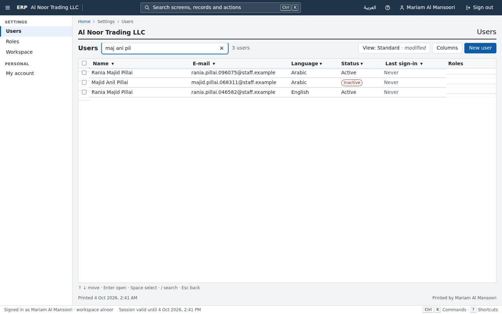

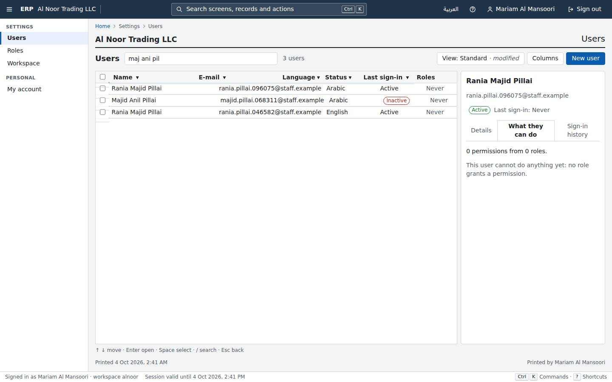

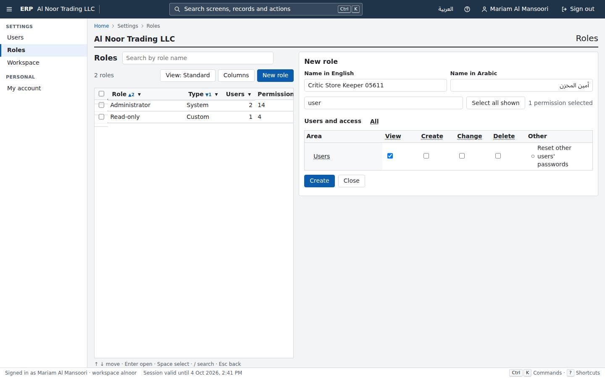

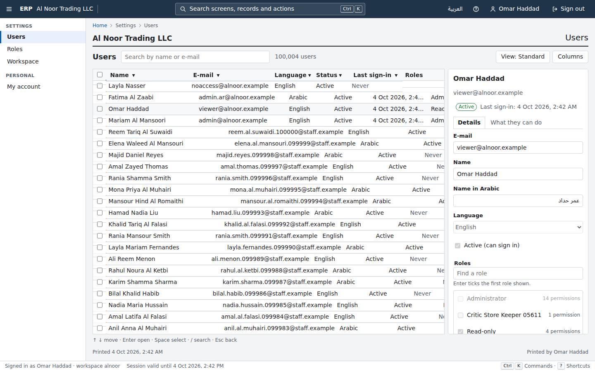

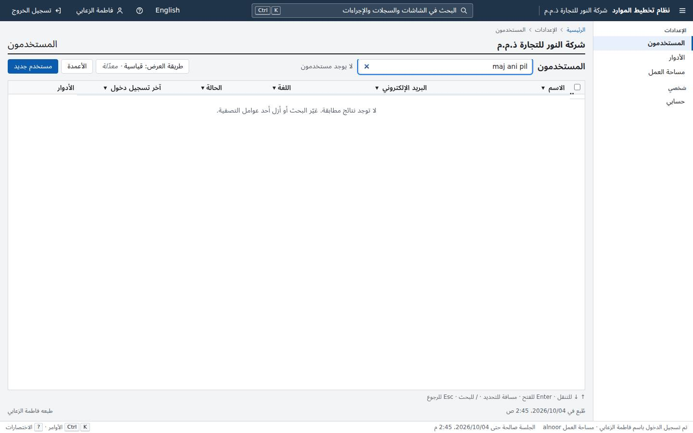

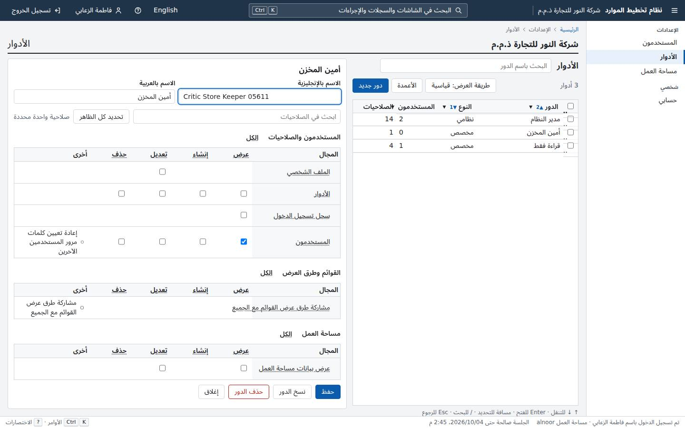

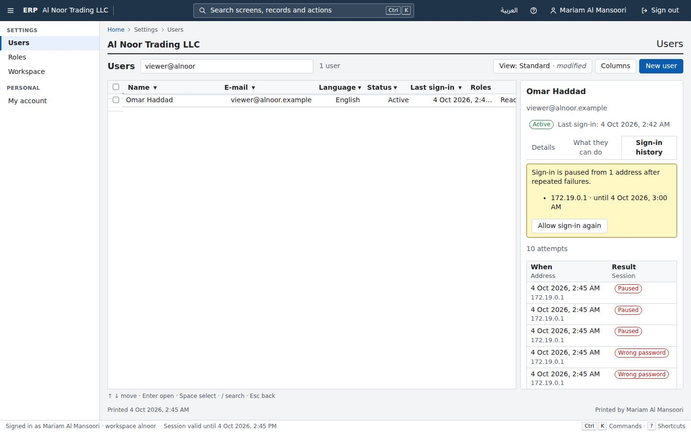

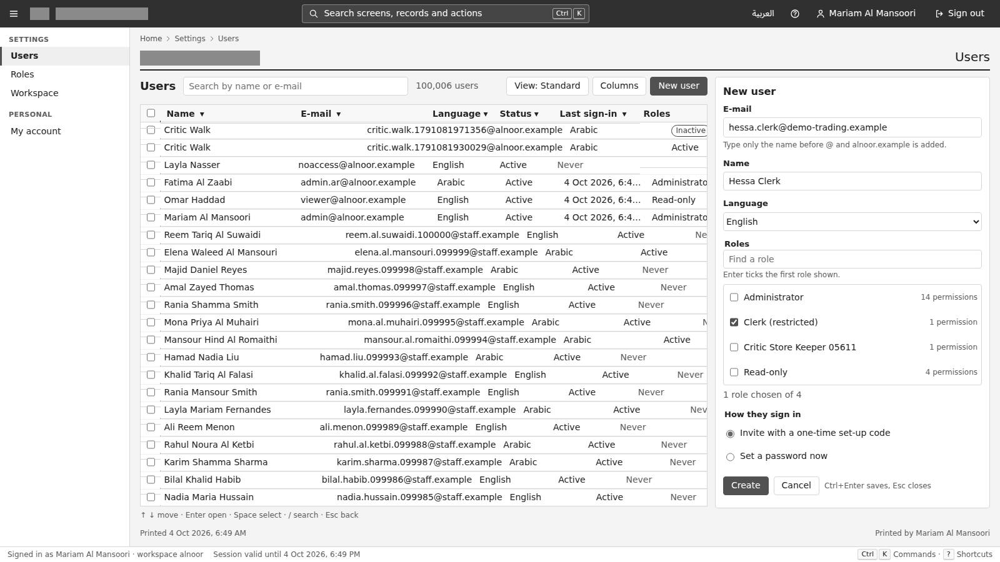
Round 3 · judged 2026-10-04T02:54:30Z · commit c02d93a8dd
English/Arabic app shell
Wave 1 · 4 rounds judgedG1's write-after-write and non-interference phases build every write body from the first documented enum value. TenantActivity.OwnLeaf hard-codes language 'en' and numerals 'latn', and OpenApiDocument.BuildBody(useDocumentedValues) returns enum[0]. So no tenant pair ever sends language 'ar' or numerals 'arab', and the code paths behind them are never attacked. Those are this piece's own features and half of the UAE market's users. Any state that leaks between tenants only on the Arabic path (a cache keyed by language, a per-locale formatter memo, a shared file or a header set only for Arabic) ships unseen. Fix (gate machinery in TenantActivity/OpenApiDocument, owned with p00): for every write endpoint, run the tenant-B-then-tenant-A write pairs and the non-interference comparison once per allowed value of every enum or AllowedTextValues field (at least every value of language and numerals), with B and A using the same value. Add 'g1.enumValuesAttacked' to the ratchet, and keep plant L1 as a gate self-test.
- G3 clean clone: one command builds, migrates, seeds and passes all tests FAIL — verify.log: ERP_PROJECT=c-p04-shell-r4 ... verify-slot.sh ./erp verify exited 1 ('verify stages failed: e2e'). The .NET stage passed (370/370) and so did web (192 unit, 146 harness). End-to-end passed 62/62. Then the stage's built-drivers health check failed: 'sign-in ours error ... (returning: error locator.waitFor: Timeout 120000ms exceeded.)'. Because of that, the timing budgets (stage 2/3) and the ratchet check (stage 3/3) never ran. I re-ran the same e2e+health sequence on a fresh stack (e2e-fresh-stack.log) and the sign-in task alone 11 more times (signin-repro, signin-repeat), and all passed, so the failure is intermittent. verify_cleanup deleted the failing run's result JSON, so its cause cannot be read.
- G3 one command to a running seeded demo PASS — ERP_PROJECT=c-p04-shell-r4 ERP_HTTP_PORT=20450 ERP_DB_PORT=20451 ./erp up served the seeded demo (100,009 users) in 114 s (up.log). Port and project overrides work.
- G1 tenant isolation of the product (my own attacks) PASS — attack-http.txt: as alnoor, B's user id gave 404, and a preferences PUT with B's userId/tenantId changed only A. A workplace PUT with B's company gave 400, B's company report 404, a CSV export searching 'gulfsteel' came back empty, and tenant headers were ignored. attack-db-app-role.txt: as erp_app, 0 rows with no tenant set, 0 of B's rows with A's tenant set, and UPDATE of B's rows gave UPDATE 0. Disabling RLS, SET ROLE and reading sign_in_secret were all refused. history-leak-recheck.txt: r3's one-tab Back leak is gone. No jobs or stored files exist yet.
- G1 gate catches a tenant leak planted in this piece's surface FAIL — Plant L1 (plant-L1-arabic-digits-leak.diff): PUT /api/identity/me/preferences keeps the last Arabic-Indic-digits caller's e-mail in a temp file and appends it to the next such caller's displayName. Gate run (plants-L1-N1-gates.log): G1HttpIsolationTests.Tenant_A_cannot_reach_tenant_B_through_any_endpoint PASSED (13 m 17 s), and so did G1NonInterferenceTests, G1ProcessStateTests and G1TenantSourceTests. Live on the planted build (plant-L1-live-demo.txt): admin@gulfsteel PUT {numerals:arab}, then admin@alnoor PUT {numerals:arab} returned displayName 'Mariam Al Mansoori (also using these digits: admin@gulfsteel.example)'.
- G1 client-state gate catches a planted client leak PASS — Plant C3 (plant-C3-palette-last-in-device-key.diff): the palette writes the last opened record into a new device key 'erp.paletteLast' that survives sign-out. clientIsolation.test.tsx failed with 'after B signed out: expected [gulfsteel, Zx81] to deeply equal []' (plants-web-vitest-fails.txt).
- G2 permissions on this piece's surface PASS — P3 (DELETE /api/identity/me/preferences with no permission): the host refused to start ('declares no permission') and all 114 gate tests failed (plant-P3-gates.log). N1 re-plant (preferences of another user named in the body): caught by G2SubjectTests ('named another user of the tenant and that user's rows in identity.users changed'). P2 (AppShell renders every route whatever the roles): caught by 3 vitest tests (offers only granted screens; users and roles toolbars).
- Rule gates (licences, strings EN/AR, accessibility, no float money, audit) PASS — Passed inside verify's web and .NET stages: the string gate, the accessibility check (917 JSX elements) and the rule tests in Erp.Gates.Tests (114/114). The N1 run shows a preferences change writes audit.entries.
779 / 780 passed
1 failed · 0 skipped · 2625s
Clean clone → demo: FAIL in 2625s
| Task | Ours | Odoo | Winner |
|---|---|---|---|
| switch-to-arabic | 1 · 0 · 0.109s · 2.65s | 6 · 1 · 2.591s · 15.28s | ours |
| reach-screen-keyboard | 2 · 3 · 0.138s · 3.15s | 3 · 8 · 0.953s · 3.99s | ours |
| open-third-user-keyboard (critic-added in r2, kept) | 6 · 7 · 0.212s · 6.41s | 8 · 13 · 1.29s · 6.74s | ours |
| keyboard-navigation (open the third contact by keyboard) | – | 9 · 10 · 1.2s · 7.25s | not-compared |

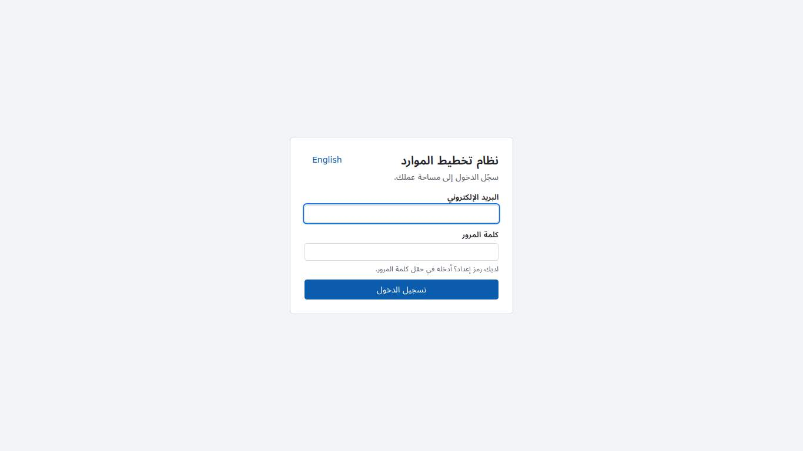

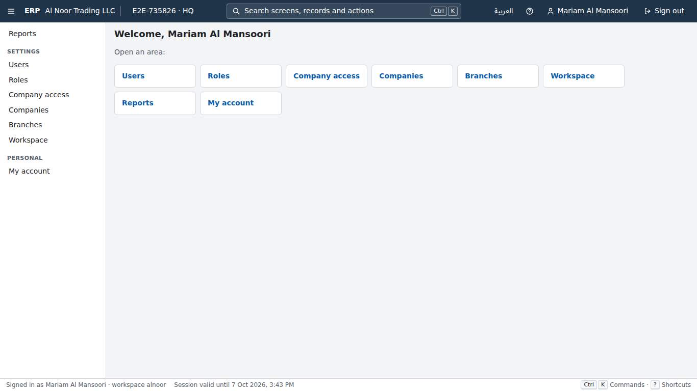

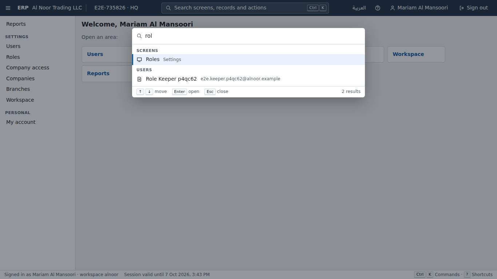

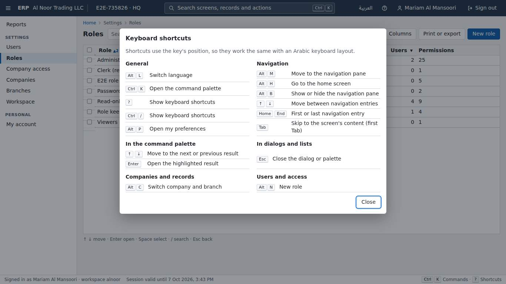

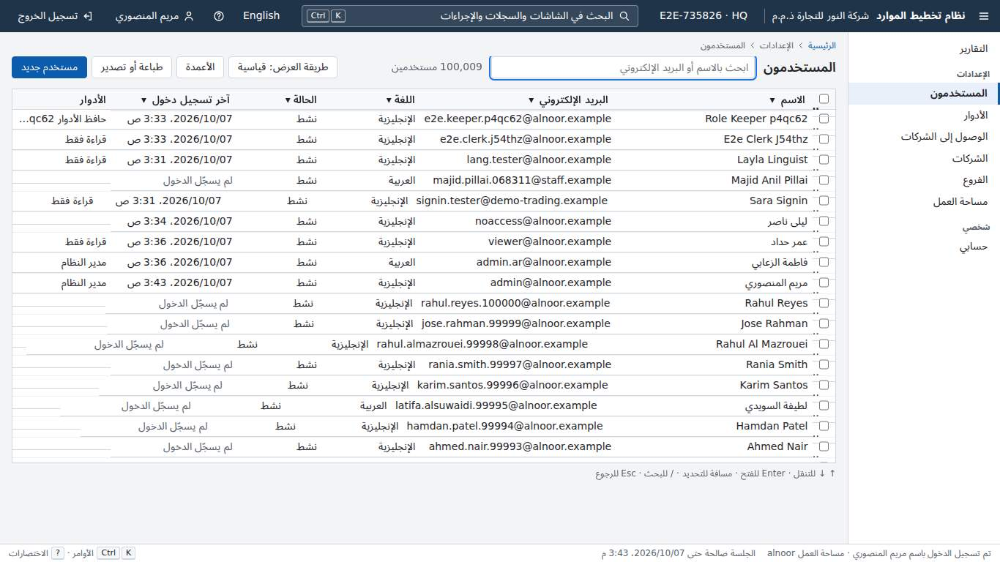

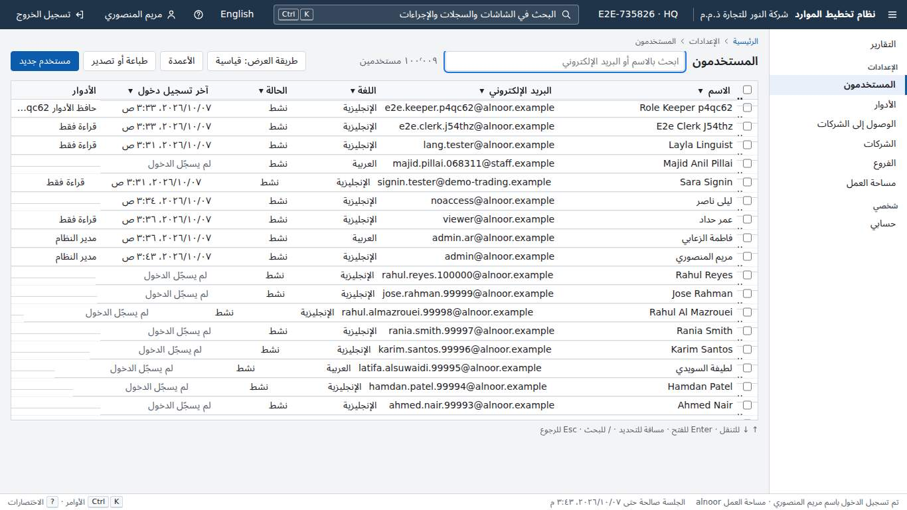

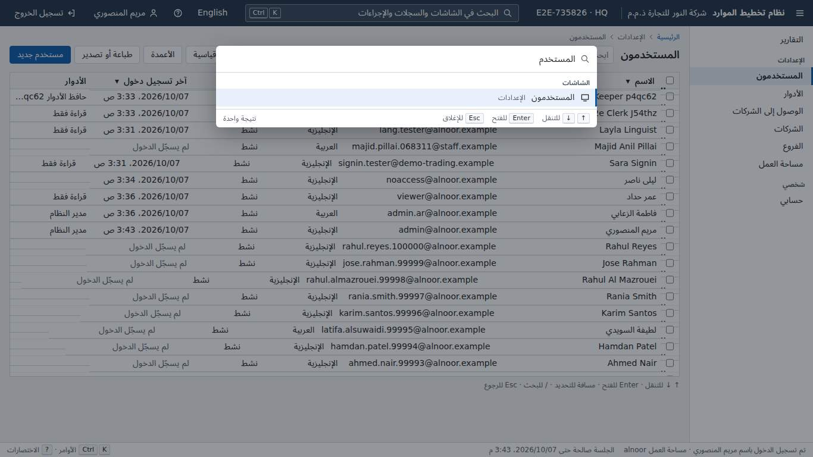

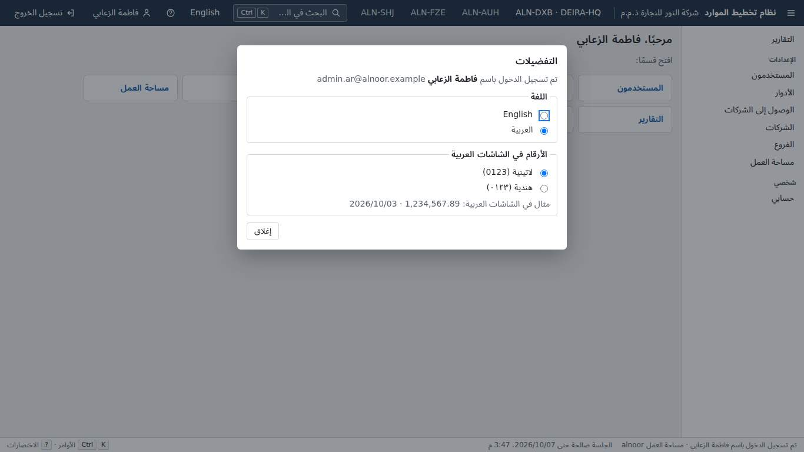
Round 4 · judged 2026-10-07T00:00:32Z · commit 3b3b0b6a53
List and search framework
Wave 1 · 2 rounds judgedEvery later module will register its lists with p05 and rely on G1 and G2 to attack them automatically. Two faults planted in p05's own code get past every gate. (1) G1: a process-wide memo kept in a static delegate field of ListBinding<T> passes both the process-state gate and the list-answer gate. The process-state gate skips statics of generic types as roots and counts Func fields as immutable. The list-answer gate never judges the total (or groups) on keyset continuation pages. The result is that one tenant scrolling to page 2 sees the other tenant's row count. (2) G2: a personal-route PUT/DELETE that also matches shared views lets a read-only user rename or delete the workspace's shared views without lists.views.share, and all 27 G2 tests pass. The G2 list test never sends a shared view's id to the personal routes, or a personal view's id to the shared routes. Fixes: (a) walk static fields of closed generic instantiations of product types, or reject delegate and closure fields unless reviewed, and walk delegate targets as ReachableState does elsewhere; (b) in ListAnswers, judge total and groups on every walked page, after the other tenant has walked the same query; (c) in G2, cross the ids: a reader sends the shared view's id to every personal route, and a sharer sends another user's personal view id to every shared route, and the workspace's views must stay unchanged.
- G1 tenant isolation (product as built) PASS — Gate suite green inside verify. My own attacks as admin@gulfsteel against alnoor (100,004 users from the shared dataset), in attack-api.txt, found 0 leaks: name, e-mail and filter searches for alnoor's needle, an OR-true filter, quote injection, % and _ wildcards, X-Tenant/X-Tenant-Id headers, tenant/tenantId query parameters, groupBy, alnoor's keyset cursor replayed, skip=99000, GET/PUT/DELETE on alnoor's shared and personal view ids (all 404, and both views were unchanged afterwards), and CSV/XLSX/PDF list exports. Database (db-inspect.txt): lists.saved_views has RLS enabled and forced with the standard policy, and erp_app has no BYPASSRLS. Unbound, erp_app sees 0 views and 0 users. Bound to gulfsteel it sees 0 alnoor rows, an INSERT for alnoor is refused by RLS, and an UPDATE of alnoor's rows touches 0 rows.
- G1 catches tenant leaks planted in p05's surface FAIL — Plant L6 (plants/L6-static-memo-next-page-total.patch) adds to ListBinding<T> a static readonly Func memo, a closure over a ConcurrentDictionary keyed by list|search|filter with no tenant. Continuation pages (after=) reuse the total that the last first page counted. All 38 G1 tests PASSED with it (plants/run-L6-g1.log, 16.6 min), process-state included (run-L6-processstate.log). Live on a plant stack (plants/plant-live-demo.txt): gulfsteel page 1 of search 'a' has total 1004, alnoor page 1 has total 3004, and gulfsteel page 2 then shows total 3004, which is alnoor's count. Two blind spots: (1) the process-state roots skip static fields of generic types (t.ContainsGenericParameters), and a delegate-typed field is judged immutable, so the captured dictionary is never reached; (2) ListAnswers judges only the first page's total and groups, never the totals of the keyset pages it walks. Gates that held: L7 (the same memo used for first-page totals) was caught by the list-answer check, with 102 wrong answers (run-L7-http.log), so r1's L3 gap stays fixed. L8 (a permissive SELECT policy on lists.saved_views) was caught by G1DatabaseIsolation (run-L8-db.log).
- G2 permissions (product as built) PASS — Gate suite green. Live: the viewer gets list read access, no share checkbox and only Copy among the bulk actions. noaccess gets 'No access' on the screen and 403 from the API.
- G2 catches unpermissioned actions planted in p05's surface FAIL — Plant P4 (plants/P4-personal-route-writes-shared-views.patch): the personal routes PUT/DELETE /api/lists/{key}/views/{id} find a view when it is shared OR the caller's own. All 27 G2 tests PASSED (plants/run-P4-g2.log). Live (plant-live-demo.txt): viewer@alnoor does not hold lists.views.share and gets 403 on PUT /shared-views/{id}. The same user gets 200 on PUT /views/{sharedId}, which renames the workspace's Team view, and 204 on DELETE /views/{sharedId}, which deletes it. Only Erp.Modules.Lists.Tests caught it (1 failure, run-P4-lists-module-tests.log), not the gate. The G2 list test sends only the administrator's personal-view id to personal routes and never a shared-view id. Gates that held: P2b (shared DELETE with the list-permission filter and handler check removed) and P3 (personal PUT/DELETE matched by id alone) were each caught by G2 (run-P2b…, run-P3…), so r1's P2 gap and p03's P3 route stay fixed.
- G3 clean clone PASS — Fresh clone at fdd08ee. ERP_PROJECT=c-p05-list-search-r4 ERP_HTTP_PORT=20550 ERP_DB_PORT=20551 ERP_VERIFY_HTTP_PORT=20560 ERP_VERIFY_DB_PORT=20561 run through verify-slot.sh ./erp verify passed in 1669 s, timed from 'slot taken' after a 5025 s wait for a slot. The ratchet check passed. ./erp up with ERP_SEED_USERS_CSV gave a running demo with 100,004 users in 93 s. The port and project overrides worked.
- Rule gates (licence, money, strings, audit, list index) PASS — These pass inside verify. Saved-view insert and delete, and the user bulk deactivation, write audit.entries rows with the actor and old/new values (checked in the database). Trigram GIN indexes exist on display_name/email_normalized and display_name_ar, plus (tenant_id, column, id) btrees.
889 / 889 passed
0 failed · 0 skipped · 1669s
Clean clone → demo: PASS in 1669s
| Task | Ours | Odoo | Winner |
|---|---|---|---|
| find-user (find one user among 100,000; p16 contacts not built, so the largest list, the dataset's 100,000 users) | 3 · 15 · 0.513s · 8.6s | 6 · 20 · 2.371s · 13.2s | ours |
| find-record (find one contact among 100,000) | – | – | not-compared |

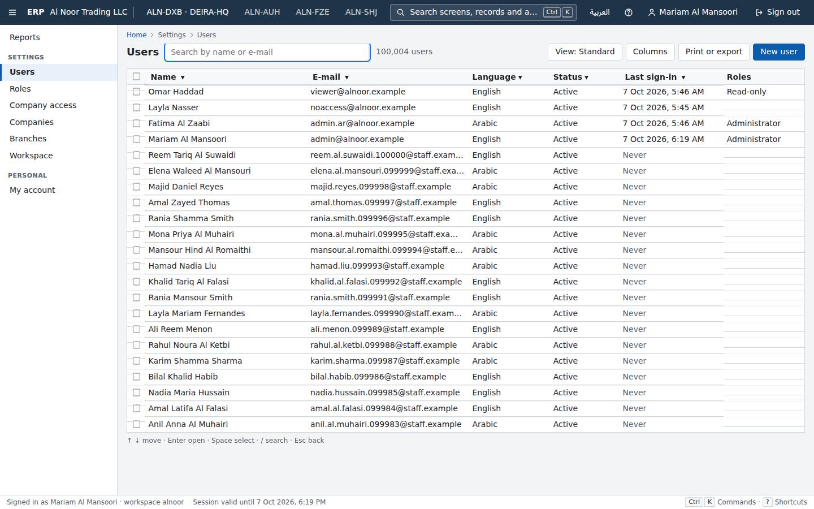

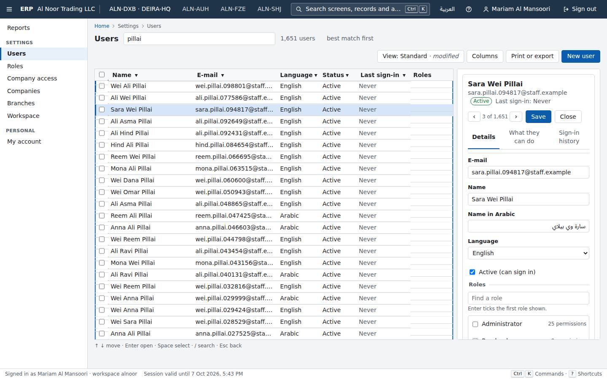

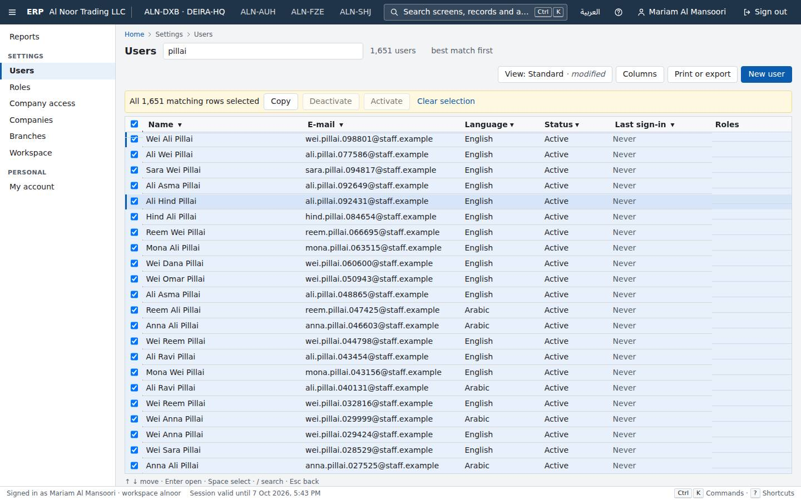

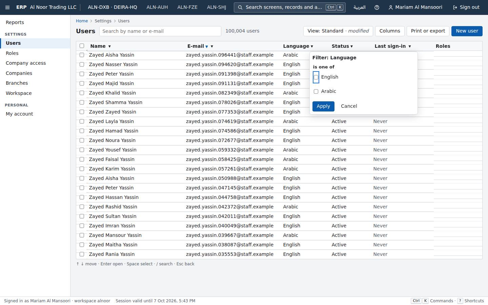

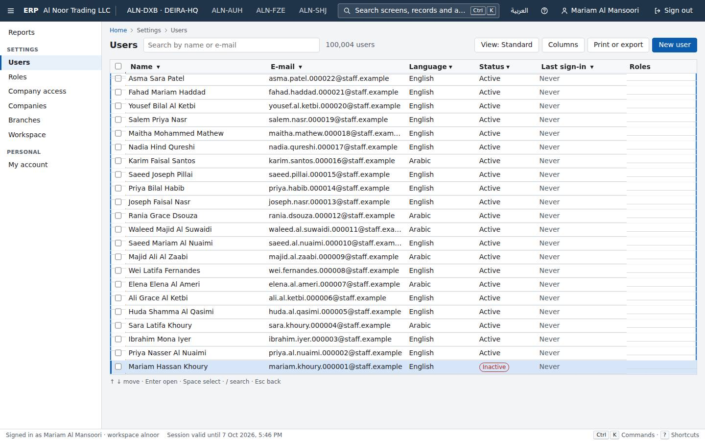

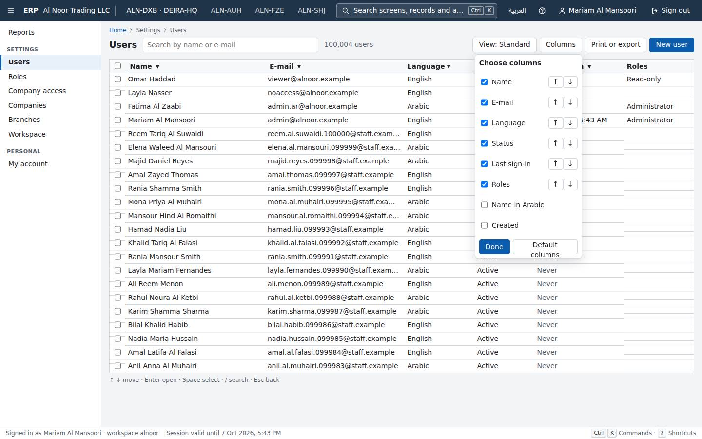

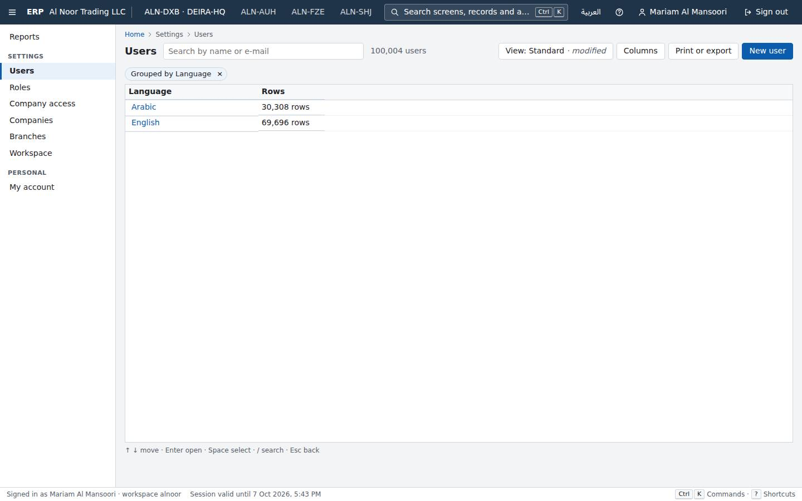

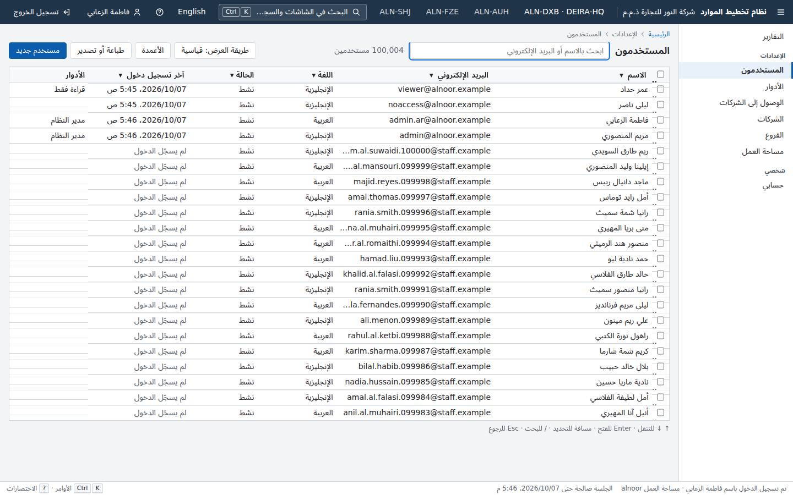
Round 4 · judged 2026-10-07T03:22:12Z · commit fdd08eeabb
Form and report framework
Wave 2 · 2 rounds judgedThe product is keyboard-first, so its shortcuts are its main controls. The form kernel (web/src/kernel/forms) decides who may save twice: the `forms.save`/`forms.saveEnter` shortcuts are enabled only when the form is editable, and useRecordForm.save() returns early without canEdit. If both checks are lost, a read-only user's Ctrl+S sends PUT. All 268 web unit tests still pass, as do the 22 screen plant self-tests and the e2e suite. The existing test 'shows a record read-only … no save' presses Ctrl+S but asserts nothing afterwards. The gate should press every registered form and list chord (save, save-enter, discard, new, delete and so on) on a screen whose user lacks the permission, assert that no request other than GET leaves, and be plant-tested against this fault. Every server-side plant this round was caught, including round 1's L2/P1/P2 misses. Separately, and most visible to users, CSV/XLSX exports stop silently at 20,000 rows (see other findings).
- G1 tenant isolation (product as built) PASS — Gate suites pass inside verify (suite plus self-http, self-company and self-noninterference). On the live demo (attack.mjs, attack-api.txt), alnoor's admin first printed 154 report and list URLs in json/pdf/csv/xlsx × en/ar, including its own company and role ids. Then gulfsteel's admin requested the same URLs three times each: plain, with X-Tenant-Id, and with X-Tenant plus X-Company-Id. All 462 answers (348×200, 96×404, 18×400) were searched after PDF text extraction and XLSX unzip: 0 contained alnoor markers (names, codes, TRNs, ids). Database: erp_app has no super and no bypassrls, cannot SET ROLE erp_owner or disable RLS, and sees only the bound tenant's rows. Every tenant table has RLS enabled and forced. The tenant binding is tied to the transaction timestamp.
- G1 catches faults planted in p06's surface PASS — Round 1's miss is fixed. L2 (printed files kept on disk by download name) was caught by G1HttpIsolation with 1,570 leaks (plants/run-L2.log). New plant L3, an on-disk output cache keyed by request path and query with no tenant, was caught by G1CompanyIsolation, G1BranchScope, the G1TenantSource source review and G2ReportData (plants/run-L3.log).
- G2 permissions (product as built) PASS — All G2 tests pass. Live: the viewer sees the company form read-only, with fields disabled, no Save button and the reason stated, and Ctrl+S sends nothing. The catalogue is filtered by permission.
- G2 catches faults planted in p06's surface FAIL — Server plants were all caught: P1+P2 from round 1 (G2ReportData ×2), P3 (a /api/reports/print/{key} route under reports.catalog.read; caught by the reviewed permission map), P4 (list print routes with no permission; the host refuses to start) and P5 (column permissions ignored; G2ReportData). On screen, W1 (kernel RecordForm editable with Save for read-only users) was caught by 13 unit tests. W2 was MISSED. In W2 the kernel form's Ctrl+S shortcut stays enabled and save() no longer checks canEdit, so a read-only user's Ctrl+S sends a write. With W2 applied, all 268 web unit tests pass, as do the tenancy (17) and identity (5) screen plant self-tests (plants/web-plants.log), and no e2e spec presses Ctrl+S on a read-only form. With one probe assertion added to forms.test.tsx, the plant is seen to send 'PUT /api/things/t1' (plants/web-w2-probe.log). The server still answers 403, but the screen gate misses an action offered without its permission in this piece's own form kernel.
- G3 clean clone PASS — Fresh clone at 889384f. `ERP_PROJECT=c-p06-form-report-r2 ERP_HTTP_PORT=20650 ERP_DB_PORT=20651 ERP_VERIFY_HTTP_PORT=20660 ERP_VERIFY_DB_PORT=20661 verify-slot.sh ./erp verify` passed in 3,336 s from 'slot taken' on a busy machine, ratchet passed (verify.log). `./erp up` brought up the seeded demo (100,004 users) in 65 s (up.log). The port and project overrides worked.
- Rule gates (licence, money, strings, audit, reports) PASS — Pass inside verify. A company save through the form writes audit.entries with actor_id and old/new phone (checked in the database). MoneyField now carries amount, currency, rate and base amount.
913 / 913 passed
0 failed · 0 skipped · 3336s
Clean clone → demo: PASS in 3336s
| Task | Ours | Odoo | Winner |
|---|---|---|---|
| edit-and-save | 3 · 17 · 0.195s · 9.72s | 4 · 19 · 0.375s · 10.28s | ours |
| arabic-report | 2 · 0 · 0.112s · 5.3s | 6 · 0 · 4.933s · 15.9s | odoo |
| print a list report in Arabic (named in the piece spec) | – | – | not-compared |

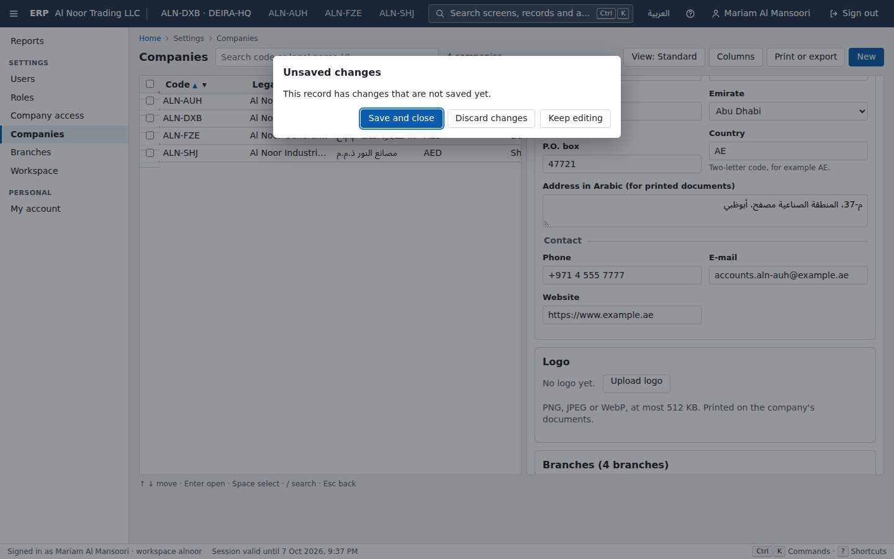

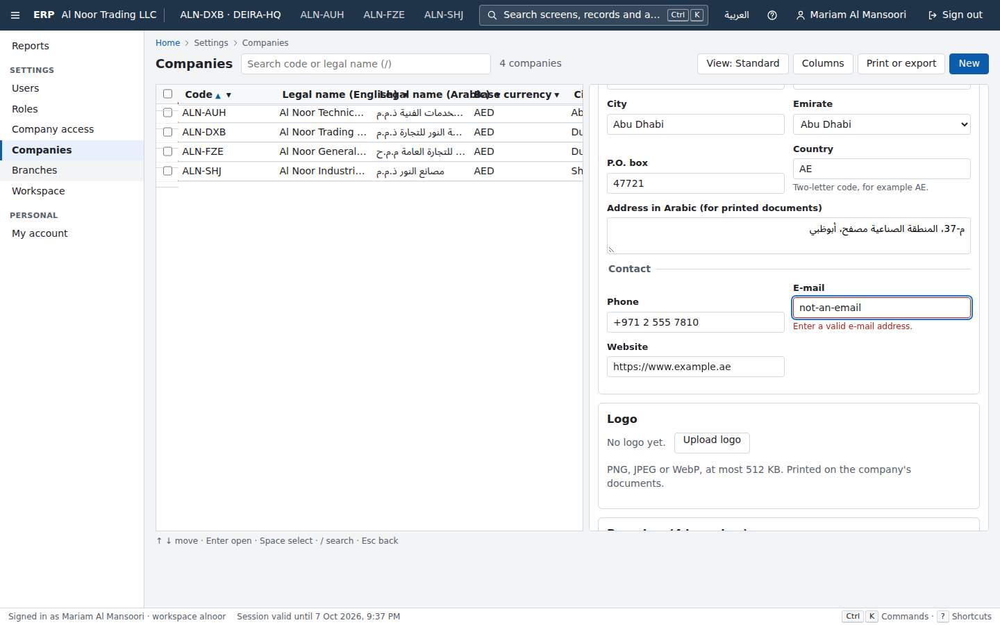

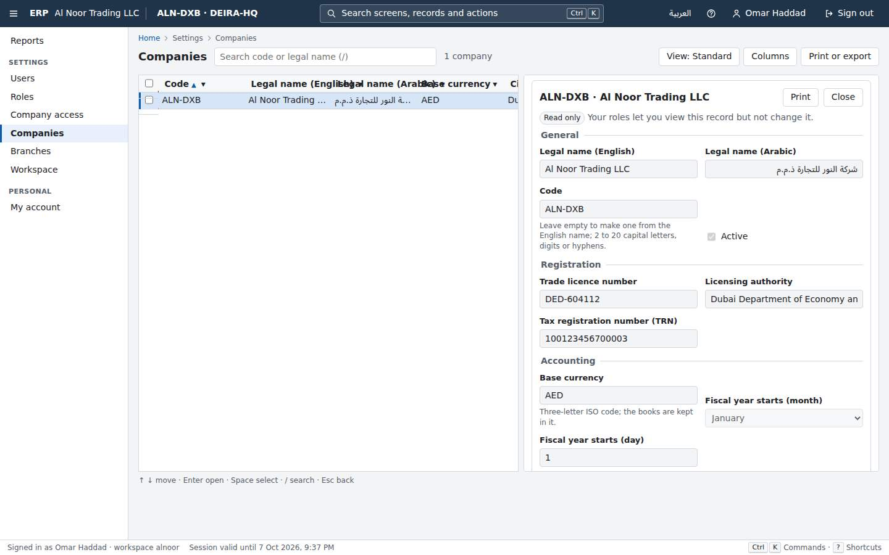

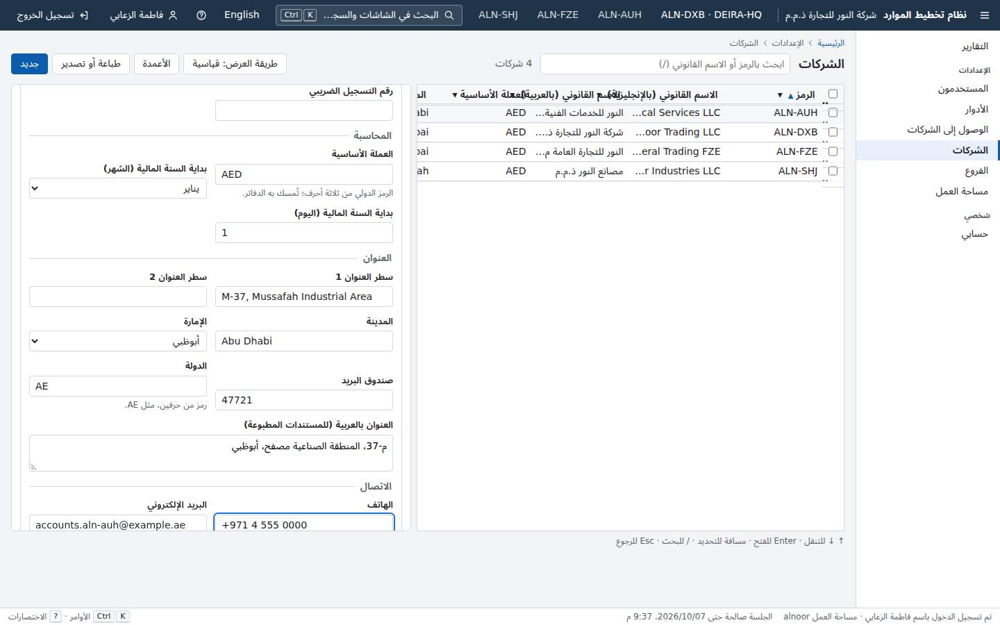

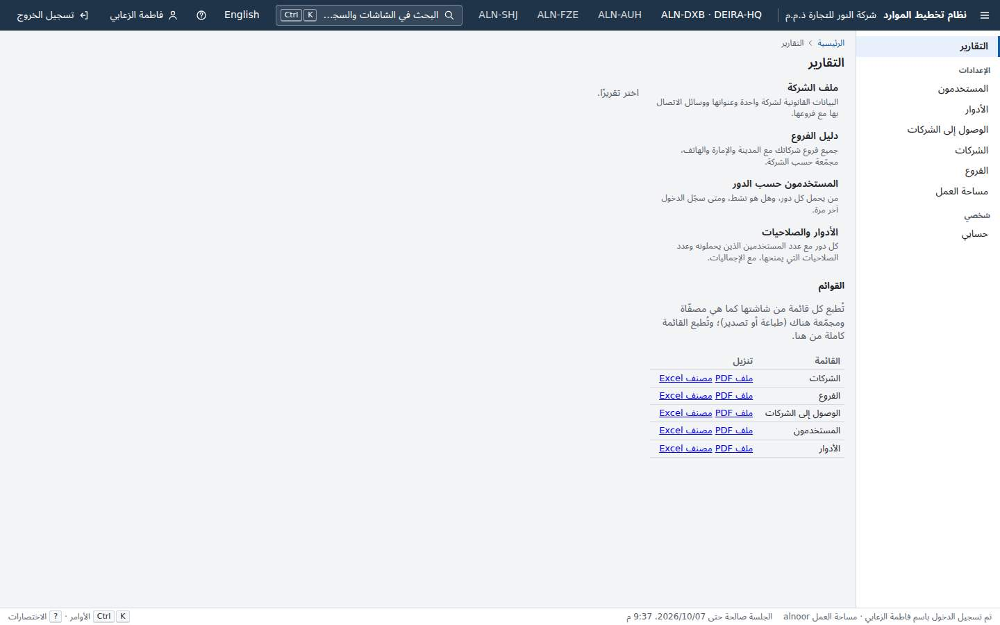

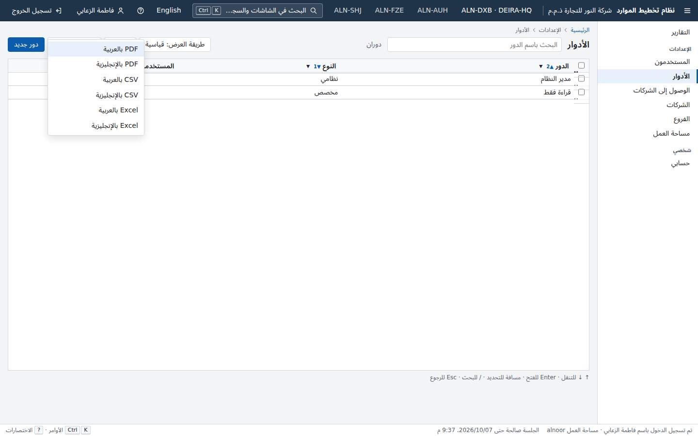

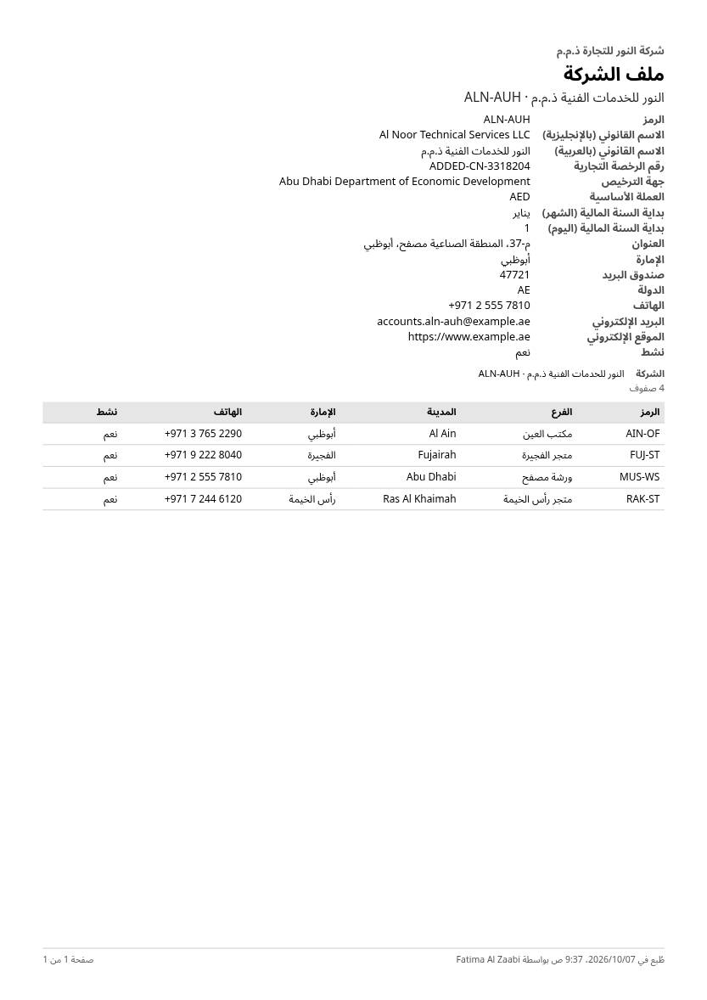

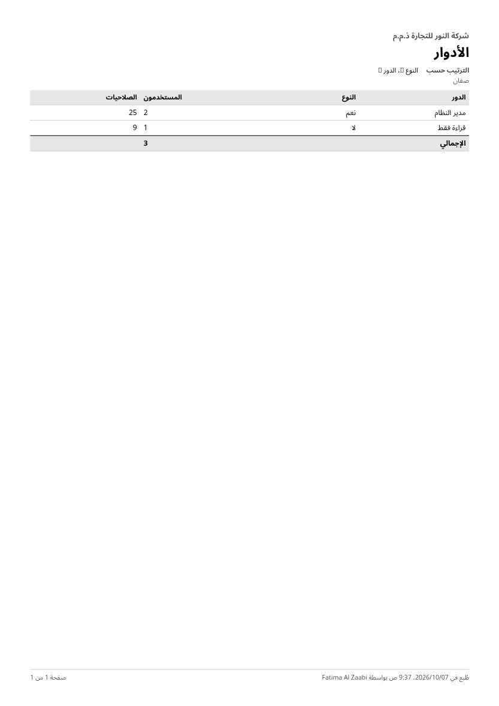
Round 2 · judged 2026-10-07T06:22:24Z · commit 889384f3e3
Audit trail
Wave 2 · 0 rounds judgedWaiting for its first critic.
Multi-currency
Wave 2 · 0 rounds judgedWaiting for its first critic.
Tenant-defined custom fields
Wave 2 · 0 rounds judgedWaiting for its first critic.
Document numbering
Wave 2 · 0 rounds judgedWaiting for its first critic.
Attachments
Wave 2 · 0 rounds judgedWaiting for its first critic.
Background jobs
Wave 2 · 0 rounds judgedWaiting for its first critic.
Approval flows
Wave 3 · 0 rounds judgedWaiting for its first critic.
Import and export
Wave 3 · 0 rounds judgedWaiting for its first critic.
Documented API for everything
Wave 3 · 0 rounds judgedWaiting for its first critic.
Shared Contacts directory
Wave 2 · 0 rounds judgedWaiting for its first critic.